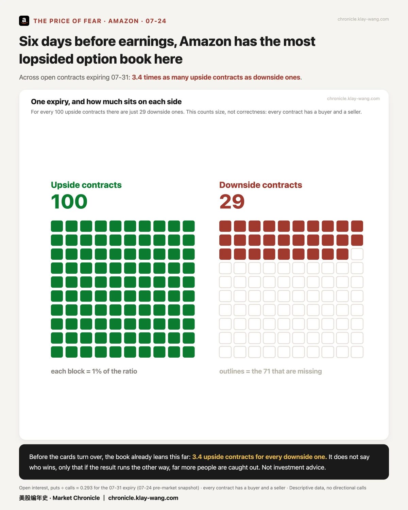
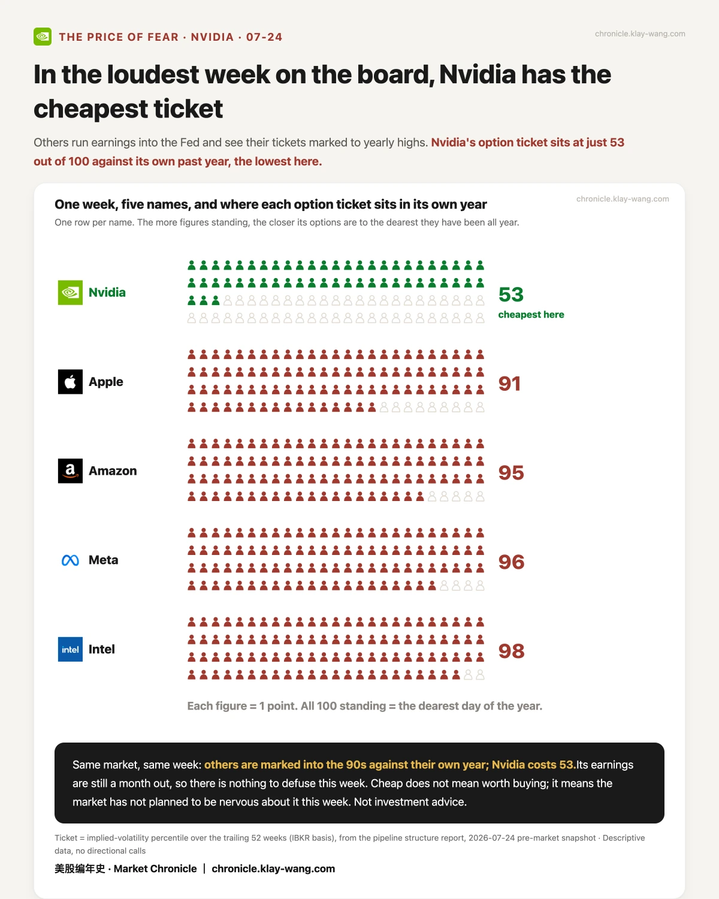
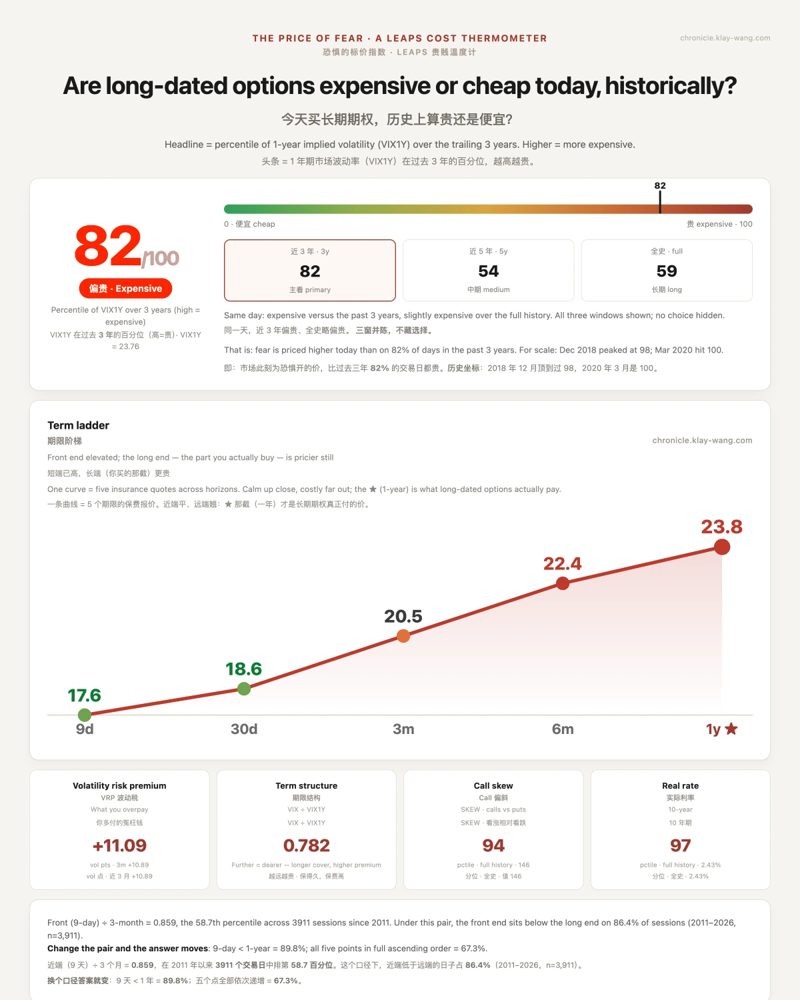

存储跌了三成， 上车的票反而更贵了· 07-25 · 7.20-7.24
• 只有一个还在山顶：全场都从各自的最高点掉下来 12% 到 39%，苹果只差 0.58%
• 想上车存储的注意：股票跌了三成，但买它期权的票价在一年最贵档，便宜的是股票不是上车成本
• 下周还跌吗：我不猜。但四家巨头的财报围栏已经钉好，Meta 那道最宽，宽到苹果的两倍
⛰️ 先看一眼位置：谁还在山顶
一句话：钱没有离开市场，它只是从一处搬到了另一处。
把每只票离自己一年内的最高点还差多远摆在一起，落差大得有点吓人：苹果只差 0.58%，几乎就站在顶上；英伟达差 12.5%，谷歌差 21.8%；而英特尔差 35%、特斯拉差 37%、闪迪差 39%。
同一个市场，同一天，位置能差这么远。谁在山顶不代表它更该买，只代表这一天想避险的钱选了它。

🎟️ 想上车存储的人，先看票价
一句话：便宜的是股票，不是上车的成本。
很多人问现在还能不能上车。我不猜涨跌，只报两个已经写在市场上的数字。
第一个：闪迪离自己一年最高点还差 33.5%，美光差 22.7%。看起来像打折。
第二个：买它们期权的票价，闪迪排在过去一年的 96 分，美光 88 分（100 分就是这一年最贵的那天）。票价却在最贵档。
两个价签指向相反的方向。想抄底的人以为在捡便宜，可上车那张票是一年里最贵的一档。

🧾 它考了十五年最好的一次，然后最惨
一句话：市场买的从来不是这一季考得好不好，是你还能好多久。
英特尔的成绩单：每股利润 42 美分，市场只等 21 美分，翻了一倍；营收增速创近十五年最快。
开盘前它还在涨 3.9%，冲到 104.18。收盘 92.32，跌 7.9%，全场垫底。从清晨的高点到收盘，一天之内走了 −11.4%。
它的期权票价也是全场最贵的一档：98 分。数字答的是上一个季度，价格问的是下一句。

🚧 下周的围栏，已经钉好了
一句话：我不猜它们往哪走，只报市场已经付钱买下的边界。
下周四家巨头开财报。市场用期权价格提前划出了每只票到 07-31 那个周五为止会被押在哪两根桩之间（这段时间里正好装着它们的财报夜）：
- Meta ±8.01%，从 558 到 655 美元。财报那晚还撞上美联储决议，一晚两颗雷
- 微软 ±6.62%｜亚马逊 ±6.39%
- 苹果 ±3.90%，四只里最窄，只有 Meta 的一半

顺带两件小事
亚马逊的账本歪得最厉害：07-31 到期的未平仓合约里，押它涨的是押它跌的 3.4 倍。它不告诉你谁会赢，只告诉你如果结果朝反方向走，被打脸的人会多得多。（每张合约都有买方也有卖方，数量比不代表谁的观点。）

英伟达是全场最便宜的一张票：票价只排 53 分，别人都在 90 多分。因为它的财报还在一个月之后，这一周没有雷要拆。

📒 顺便，认个错
一句话：发过的判断，对了回来对，错了也回来认。
07-22 我们判断谷歌、特斯拉财报后都不会冲出各自的预期波动带（押价的人赢）。结果两只双双跌穿了下沿：谷歌收 319.74，带子下沿是 329.17；特斯拉收 313.03，下沿是 359.85。
方向押反了，记分牌记一个错。这比只晒对的值钱。
🌡 温度计：82 / 100
我有个恐惧温度计，量的就是市场现在花多少钱，给未来一年买保险。保险越贵，说明市场越怕。 今天读数 82，意思是这份保险贵到了过去三年的前列。
短期的怕塌得很快，长期的这份贵，一分没便宜。短期的慌有人接，长期的怕没人愿意低价卖。

本站不提供投资建议，不预测方向，不做择时。